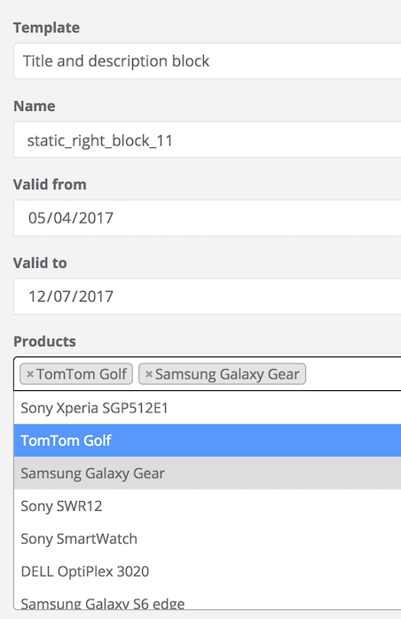

Navigation
CMS Block Product Connector
Product Blocks
Product blocks are blocks that can be embedded in the product template, for which we can specify on which specific product we want them to be rendered.
Installation
- Install the CMS Block Product Connector module with composer: "spryker/cms-block-product-connector": "^1.0.0"
- Register the form plugin by adding the CmsBlockProductFormPlugin to the CMS Block GUI dependency provider (\Pyz\Zed\CmsBlockGui\CmsBlockGuiDependencyProvider).
<?php
namespace Pyz\Zed\CmsBlockGui;
use Spryker\Zed\CmsBlockProductConnector\Communication\Plugin\CmsBlockProductFormPlugin;
class CmsBlockGuiDependencyProvider extends CmsBlockGuiCmsBlockGuiDependencyProvider
{
/**
* @return array
*/
protected function getCmsBlockFormPlugins()
{
return = array_merge(parent::getCmsBlockFormPlugins(), [
new CmsBlockProductFormPlugin(),
]);
}
}
- Register the form handler plugin by adding the CmsBlockProductConnectorUpdatePlugin to the CMS Block dependency provider (Pyz\Zed\CmsBlock\CmsBlockDependencyProvider).
<?php
namespace Pyz\Zed\CmsBlock;
use Spryker\Zed\CmsBlockProductConnector\Communication\Plugin\CmsBlockProductConnectorUpdatePlugin;
class CmsBlockDependencyProvider extends CmsBlockCmsBlockDependencyProvider
{
protected function getCmsBlockUpdatePlugins()
{
return array_merge(parent::getCmsBlockUpdatePlugins(), [
new CmsBlockProductConnectorUpdatePlugin()
]);
}
}
- Register the collector plugin by adding the CmsBlockProductConnectorCollectorPlugin to the Collector dependency provider (\Pyz\Zed\Collector\CollectorDependencyProvider).
<?php
namespace Pyz\Zed\Collector;
...
class CollectorDependencyProvider extends SprykerCollectorDependencyProvider
{
public function provideBusinessLayerDependencies(Container $container)
{
...
$container[self::STORAGE_PLUGINS] = function (Container $container) {
return [
...
CmsBlockProductConnectorConstants::RESOURCE_TYPE_CMS_BLOCK_PRODUCT_CONNECTOR => new CmsBlockProductConnectorCollectorPlugin(),
];
};
}
}
- Register the product list plugin - optional:
To show which product abstracts are assigned to a block on a block view page, add the CmsBlockProductAbstractListViewPlugin to the CMS Block GUI dependency provider.
<?php
namespace Pyz\Zed\CmsBlockGui;
...
class CmsBlockGuiDependencyProvider extends CmsBlockGuiCmsBlockGuiDependencyProvider
{
...
/**
* @return array
*/
protected function getCmsBlockViewPlugins()
{
return array_merge(parent::getCmsBlockViewPlugins(), [
new CmsBlockProductAbstractListViewPlugin(),
]);
}
}
- Register block list to product abstract view - optional:
To show which blocks are assigned to a product abstract on a product abstract view page, add the CmsBlockProductAbstractBlockListViewPlugin to the Product Management dependency provider.
<?php
namespace Pyz\Zed\ProductManagement;
...
class ProductManagementDependencyProvider extends SprykerProductManagementDependencyProvider
{
protected function getProductAbstractViewPlugins()
{
return array_merge(parent::getProductAbstractViewPlugins(), [
new CmsBlockProductAbstractBlockListViewPlugin()
]);
}
}
Usage
Adding a template for a new block is done in the same way as for static blocks see CMS Block.
Create a new Twig template under the src/Pyz/Yves/CmsBlock/Theme/default/template/ folder. Call it productSale.twig and it will contain the following structure:
<!-- CMS_BLOCK_PLACEHOLDER : "saleMessage" -->
<!-- CMS_BLOCK_PLACEHOLDER : "saleInterval" -->
<blockquote>
{{ spyCmsBlockPlaceholder('saleMessage') | raw }}
<footer>
{{ spyCmsBlockPlaceholder('saleInterval') | raw }}
</footer>
</blockquote>
To configure the block:
- In Zed, go to the CMS section and navigate to the blocks section.
- Click Create CMS Block, to create a new block.
- From the template drop-down select the new added template and name the new block.
- Set a product or a list of product the ProductField field. While typing, the product search will offer suggestions from the product list.

- Set the block active if you need to use it straight away.
- After clicking Save , similar to static blocks and pages, you'll be asked to provide the glossary keys for the placeholders that are included in the Twig template. For this part, follow the steps described for creating a static page here CMS - Creating a New Page.
- Embed the block in the product page by adding the following code in a product page template (e.g "detail.twig" in Spryker Demoshop):
{% if product is defined %}
{{ spyCmsBlock({product: product.id}) }}
{% endif %}
- To see the page in Yves, the client data storage (Redis) must be up-to-date. This is handled through cronjobs.
- To manually execute this step, run the collectors to update the frontend data storage:
vendor/bin/console collector:storage:export
Results:
After running the collectors you should be able to see the block only on the page to which you configured it to be shown.
See also: